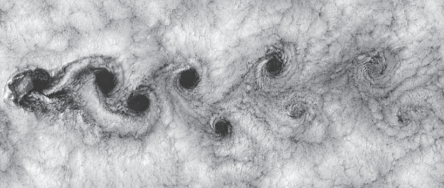
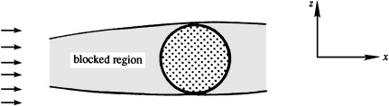

Choosing the \(x\)-\(z\) plane (setting \(l=0\)) simplifies \(\omega^2 = \frac{k^2 + l^2}{k^2 + l^2 + m^2} N^2\) into
\(
\omega = \frac{kN}{\sqrt{k^2+m^2}} = \frac{kN}{K}
\)
Thus, the dispersion relation for internal gravity waves can also be written as
\(\omega = N \cos\theta\)
where \(\theta = \tan^{-1}(m/k)\) is the angle between the phase velocity vector and the horizontal. The key insight is that internal wave frequency depends only on the direction of \(\mathbf{K}\), not its magnitude.
This is in sharp contrast with surface and interfacial gravity waves, for which frequency depends only on the magnitude.
In addition, the wave frequency lies in the range \( 0 < \omega < N \), and this indicates that \( N \) is the maximum possible frequency of internal waves in a stratified fluid
Considering particle motion in incompressible internal waves, the horizontal velocity is
\(u = u_0 e^{i(kx+ly+mz-\omega t)}\)
Differentiating \(\Rightarrow \partial u/\partial x = iku_0 e^{i(kx+ly+mz-\omega t)} = iku\)
Using the incompressibility condition \(\nabla \cdot \mathbf{u} = 0\), get
\[
ku + lv + mw = 0 \Rightarrow \mathbf{K}\cdot\mathbf{u} = 0\]
This shows that particle motion is perpendicular to the wave number vector.
The result is valid for shear waves (or transverse waves) because the fluid moves parallel to the constant phase lines. Surface or interfacial gravity waves do not have this property because the field varies exponentially in the vertical.
Interpreting \(\theta\) in \(\omega = N \cos\theta\): Maximum frequency \(\omega=N\) occurs when \(\theta=0\), meaning purely vertical motion (\(m=0\)) When \(\theta=\pi/2\), \(\omega=0\), implying horizontal particle motion.
However, pure horizontal motion doesn’t require \(k=0\); internal waves with horizontal motion still satisfy governing equations. The 2D steady solution satisfies
\[
\partial u/\partial x + \partial v/\partial y = 0
\] Motion is two-dimensional in horizontal planes, often leading to phenomena like von Karman vortex streetBlocking can occur in strongly stratified fluids. If a 2D body is placed horizontally
\(\partial v/\partial y = 0\)
\(\partial u/\partial x = 0\), the fluid ahead of the body becomes blocked, held motionless because vertical motion \(w\) is suppressed by strong stratification
1 Anderson, John. (2017). Fundamentals of Aerodynamics, 6th ed. (6). New York: McGraw Hill Education.